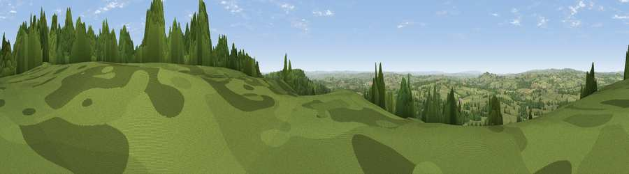

Viewpoint near South Brewham
#6985 in England · top 8% of its area beats it · near South Brewham · path 100 mWhere it is
The exact computed spot (ST 74425 34925). Click the marker for map links.
Public access: the nearest public right of way is about 100 m away — the final stretch may cross private land. Computed from Natural England's CRoW access layer and OpenStreetMap rights of way — not the legal definitive map. Always verify locally.
The view, rendered

A 360° render of this exact spot computed from the terrain model, tree cover and land cover — summer colours, afternoon light, calibrated against photographs of famous viewpoints. Real trees, hedges and buildings will differ in detail.
The panorama
Grey silhouette: terrain skyline in each direction (720 bearings, Earth curvature and refraction included). Dashed green: skyline with trees (+15 m) and buildings (+8 m) as obstacles. Blue strip: how far the ground is visible on each bearing.
Where the view opens
Wedge length = distance to the farthest visible ground on that bearing (vegetation-aware). Rings at 10, 25 and 50 km.
What fills the view
56% grassland · 41% woodland · 3% cropland ·
Angular shares of the visible panorama (visual magnitude), not map area. Landscape diversity 0.36 (0–1 Shannon).
Key numbers
More beautiful places nearby
The staircase of upgrades: each row has a higher view potential than everything closer. Driving times are estimates from straight-line distance, calibrated against real road routing — check an actual route before setting out.
| Place | Direction | Drive | Score |
|---|---|---|---|
| Viewpoint near South Brewham | NNE · 1 km | ~2 min | 69.5 |
| Long Knoll | ENE · 5 km | ~11 min | 74.6 |
| Viewpoint near Lamyatt | W · 8 km | ~16 min | 77.8 |
| Viewpoint near Berwick St John | SE · 23 km | ~38 min | 78.2 |
| Beacon Batch | NW · 34 km | ~52 min | 79.4 |
| Bleadon Hill [Loxton Hill] | WNW · 44 km | ~64 min | 79.6 |
| Viewpoint near Askerswell | SSW · 45 km | ~65 min | 81.7 |
| Lewesdon Hill | SW · 46 km | ~66 min | 83.3 |
51.11304, -2.36673 · source: screening · position refined by local search. Computed location — check access rights before visiting.